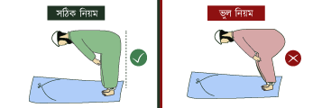
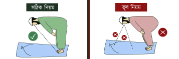
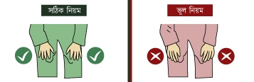
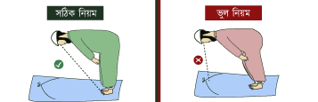
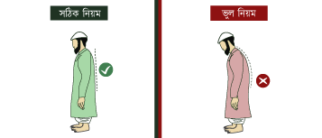

রুকু করার নিয়ম
সুরা কেরাত পাঠ সম্পন্ন হলে "আল্লাহু আকবার" তাকবীর বলে রুকুতে যেতে হবে। রুকুর সময় শরীরের উপরের অংশকে এমনভাবে সামনে ঝুঁকাতে হবে যাতে মাথা, পিঠ ও কোমর এক বরাবরে থাকে।

দৃষ্টি দুই পায়ের মধ্যবর্তী স্থানে রাখবে। মাথা এতো বেশি ঝুকাবে না যাতে থুতনি বুকের সাথে লেগে যায়। মাথা, পিঠ ও কোমর এক বরাবরে সোজা রাখবে।
রুকুর সময় হাঁটু ভাংবে না। দুই পা সোজা রাখবে।

ডান হাত দিয়ে ডান হাঁটু ও বাম হাত দিয়ে বাম হাঁটু শক্তভাবে ধরবে। হাতের আঙুলগুলোর মাঝে কিছুটা ফাঁক থাকবে।

দুই হাত ও বাহু সোজা রাখবে। কুনুই বাঁকা করবে না।

রুকু থেকে ধীরে সুস্থে সোজা হয়ে দাঁড়াবে। দুই হাত শরীরের দুই দিকে থাকবে। সিজদায় যাওয়ার আগে শরীর সম্পূর্ণ সোজা করে দণ্ডায়মান হওয়া জরুরী। রাসুলুল্লাহ (সাঃ) রুকু থেকে সোজা হয়ে না দাঁড়িয়ে তাড়াতাড়ি সিজদাহ করা অত্যন্ত অপছন্দ করতেন।
